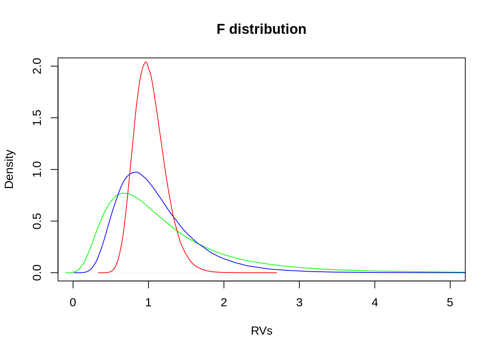
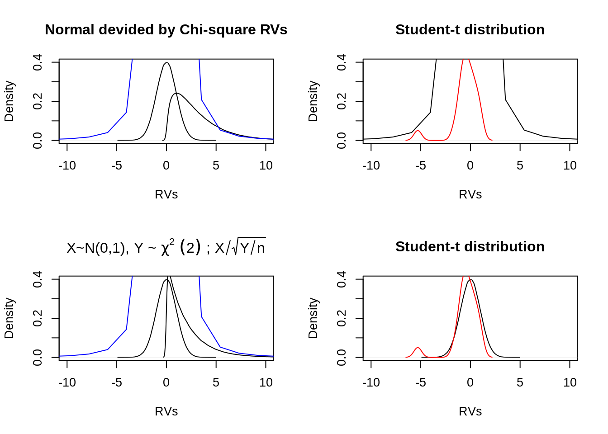

9.3 Further examples
9.3.1 Difference between two groups
In the introductory example we asked for the underlying probability \(\theta\) of a single coin that was flipped repeatedly. Consider now, that a second coin \(y_2\) is introduced. One question that arises might be for example:
#simulate flips of two coins
sample.space <- c(0,1)
##First coin:
theta1 <- 0.5 # probability of a success (here: head)
X1 <- 30 # number of trials in the experiment
n1 <- 100 # number of observations
k1 <- 0 # number of heads [initialization]
for (i in 1: n1) {
k1[i] <- sum(sample(sample.space, size = X1, replace = TRUE,
prob = c(theta1, 1 - theta1)))
}
##Second coin:
theta2 <- 0.7 # probability of a success (here: head)
X2 <- 30 # number of trials in the experiment
n2 <- 100 # number of observations
k2 <- 0 # number of heads [initialization]
## repeat experiment N-times
for (i in 1: n2) {
k2[i] <- sum(sample(sample.space, size = X2, replace = TRUE,
prob = c(theta2, 1 - theta2)))
}
## show results in a tibble
coin.flip2 <- tibble("coin" = c(replicate(n1,"coin1"), replicate(n2,"coin2")),
"n" = c(seq(from=1, to=n1, by=1), seq(from=1, to=n2, by=1)),
"k" = c(k1,k2),
"x" = c(replicate(n1,X1), replicate(n2,X2))
) %>%
print()## # A tibble: 200 x 4
## coin n k x
## <chr> <dbl> <dbl> <dbl>
## 1 coin1 1 18 30
## 2 coin1 2 17 30
## 3 coin1 3 15 30
## 4 coin1 4 11 30
## 5 coin1 5 16 30
## 6 coin1 6 14 30
## 7 coin1 7 19 30
## 8 coin1 8 14 30
## 9 coin1 9 14 30
## 10 coin1 10 15 30
## # … with 190 more rows#Plotting the observed results
ggplot(data=coin.flip2,mapping = aes(x=k, fill=coin ))+
geom_histogram()
9.3.1.1 Conceptual steps for modeling
We suppose that the underlying probabilities of the two coins correspond to different latent variables \(\theta_1\) and \(\theta_2\).
First step is again the identification of the relevant variables according to the research question. As already indicated for the “one coin” example we have:
- the observed number of heads \(k_1\) and \(k_2\) (for each coin, respectively), which is influenced by
- the number of observations \(n_1\) and \(n_2\) and by
- the underlying probabilities \(\theta_1\) and \(\theta_2\).
Furthermore, from a conceptional perspective, we are interested in the difference between the coin biases. Therefore a further variable will be introduced \(\delta\), defined by: \[\delta =\theta_1 - \theta_2.\]
The distributional assumptions, according to the second and third step, can be adopted from the “one coin” example, such that the graphical notation (including the textual notation) can be denoted as follows:
9.3.1.2 Notation Beta-Binomial Model - Two Groups

Graphical notation Beta-Binomial Model - Two groups
9.3.2 Simple linear regression with one metric predictor
The following example originates from a data set in which speed of cars and the distance taken to stop was recorded. It is a simple data set good for introducing the basic ideas for simple linear regression.
## 'data.frame': 50 obs. of 2 variables:
## $ speed: num 4 4 7 7 8 9 10 10 10 11 ...
## $ dist : num 2 10 4 22 16 10 18 26 34 17 ...One possible question could be how much the stopping distance increases when the speed of a car increases.
9.3.2.1 Conceptual steps for modeling
First step is to identify the relevant variables. In this case these are “speed” measured in mph and “distance” measured in ft, thus, both variables are metric variables. As distance will be predicted from speed. The is “distance” and the is “speed”. A scatter plot can visualize a possible relationship between both variables.
plot(x=cars$speed,y=cars$dist, type="p", main="scatter plot of cars data set",
ylab="distance in ft", xlab="speed in mph")
Next step is to define a descriptive model of the data. According to the scatter plot it is not too absurd to think that distance might be proportional to speed. Therefore, a linear relationship between both variables can be assumed, where speed is used i order to predict distance. But how can the distribution of the predicted variable “distance” be described? The following plot shows in blue the density of the actual distance values.
#density of distance values in blue
#(in black simulation of a normal distribution)
dens(cars$dist, col="blue", norm.comp = TRUE, main="Distribution of distance",
xlab="distance in ft")Although the distribution of “distance” values is not identical to the corresponding normal distribution, it can be assumed that the values follow a normal distribution. The underlying consideration is that the distance values \(y_i\) are distributed randomly according to a normal distribution around the predicted value \(\hat{y}\) and with a standard deviation denoted with \(\sigma\). This can be denoted as: \[y_i\sim Normal(\mu, \sigma).\] The index \(i\) indicates each element (i.e. car) of the list \(y\), which in turn is the list of distances.
In the third step, a Bayesian perspective is taken the prior knowlege (before seeing the data) has to be defined. The parameters of the current model are the predicted value \(\mu\) and the standard deviation \(\sigma\). For the parameter \(\mu\) a normal distribution can be assumend with parameters that reflect the estimated values from the sample.
#descriptive statistics from the sample
tibble(variables=c("speed", "distance"),
mean=c(mean(cars$speed),mean(cars$dist)),
sigma = c(sd(cars$speed), sd(cars$dist)))## # A tibble: 2 x 3
## variables mean sigma
## <chr> <dbl> <dbl>
## 1 speed 15.4 5.29
## 2 distance 43.0 25.8\[\mu\sim Normal(43,26)\]
For the standard deviation \(\sigma\) a uniform distribution is assumed: \[\sigma\sim Uniform(0,40)\]
9.3.2.2 Excursus: Identically and independently distributed ()
The short model description \(y_i\sim Normal(\mu, \sigma)\) incorporates often already an assumption about the distribution of distance-values: They are . Often the abbreviation can be found for this assumption: \[y_i\overset{\text{iid}}{\sim} Normal(\mu, \sigma).\]
The abbreviation indicates that each value \(y_i\) has the same probability function, independent of the other \(y\) values and using the same parameters (McElreath 2015). This is hardly ever true (why hierarchical modeling is very attractive). For example, thinking about the cars in the current example data set. Some cars may be of different types or even the same type but different batches. But the question is: Is this underlying dependency relevant for the model? If yes, this information has to be added in the model (e.g. in form of a hierarchical model). Janyes states it as follows:(Jaynes 2003, 339). But if one do not know any relevant underlying relationships the most conservative distribution to use is . Note, that the stated assumptions define how the model represents a problem and not how the world should be understood. For example, there might exist underlying correlations but on the overall distribution there influence tends towards zero. In such cases it remains usefull to assume iid (McElreath 2015).
9.3.3 Notation Simple Regression model

Graphical notation Simplre Regression model
References
Jaynes, Edwin T. 2003. Probability Theory: The Logic of Science. Cambridge university press.
McElreath, Richard. 2015. Statistical Rethinking: A Bayesian Course with Examples in R and Stan. Chapman; Hall/CRC.